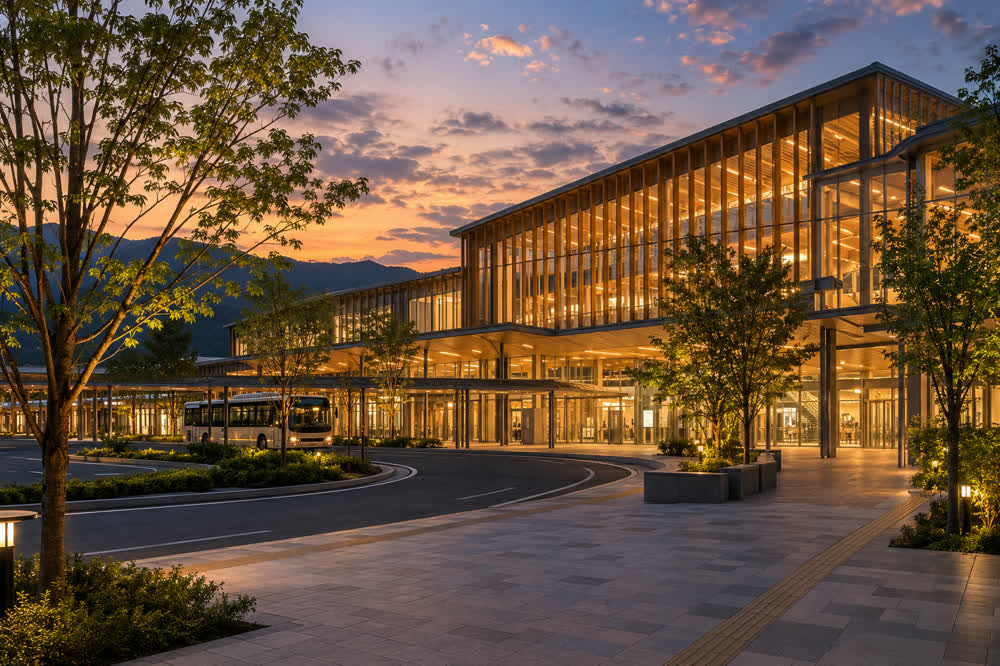

Harukawa Central Station
| Harukawa Central Station 春川中央駅 | |
|---|---|
 The North Exit of the station building at dusk | |
 Location in Minori Prefecture | |
| General information | |
| Location | 1-1 Ekimae-chō, Harukawa, Minori Prefecture |
| Operator | Harukawa Railway |
| Lines | Kagami Line (0.0 km) Bayside Line (0.0 km) |
| Platforms | 2 island platforms, 1 side platform |
| Tracks | 5 (1–3, 5 and 6) |
| Structure | Elevated |
| Station building | Harukawa Central Terrace (2011) |
| History | |
| Opened | 15 July 1926, as Harukawa Station |
| Renamed | 1 October 1962 |
| Rebuilt | 26 March 2011 (elevated) |
| Passengers | |
| FY2025 | 38,420 boardings a day |

Harukawa Central Station (春川中央駅, Harukawa-Chūō-eki) is the main railway station of Harukawa, the capital of Minori Prefecture, Japan. It is the starting point of both lines of the Harukawa Railway (HaruTetsu): the Kagami Line to Tsukimi Onsen and the Bayside Line to Minori Port, and every Tsukikage limited express starts and ends here. The station lies in the Ekimae district, a 15-minute walk south of Harukawa Castle, and with 38,420 boardings a day in FY2025 it is by far the busiest station on the network.[1]
The station opened on 15 July 1926 as Harukawa Station (春川駅) and took its present name on 1 October 1962, when the Bayside Line opened. Its present elevated form and the station building Harukawa Central Terrace (春川中央テラス), which contains shops and the railway's head office, opened on 26 March 2011.
History[edit]
The station opened on 15 July 1926 as the terminus of the Kagami Valley Railway's first section, to Kamano, with a small wooden building at the southern edge of the town.[2] The air raid of 29 July 1945 destroyed the building together with much of the station area, and a temporary wooden building served until a two-story concrete building was completed in 1953.[citation needed] The station square in front of it became the starting point of Sagimai Avenue, the 50 m wide boulevard of the postwar reconstruction plan, built from 1949 to 1958.
When the Bayside Line opened to Minori Port on 1 October 1962, carrying both passengers and freight, a second island platform and a freight yard to the south were added for it, and the station was renamed Harukawa Central. The freight yard closed with the end of freight traffic in 1987, and its site later became the plaza of the South Exit. In 1998 the Bayside Line was raised onto a viaduct between Harukawa Central and Shinkō-dōri.
In 2004 Minori Prefecture, the city of Harukawa and HaruTetsu began a joint project to raise the Kagami Line tracks onto a viaduct, which removed six level crossings at a cost of ¥24.8 billion.[3] The elevated station and Harukawa Central Terrace opened on 26 March 2011, and the company moved its head office into the new building.[4]
Layout[edit]
The station has five terminal tracks on the third level: two island platforms, for tracks 1 and 2 (Kagami Line) and tracks 5 and 6 (Bayside Line), and a side platform for track 3, used by the Tsukikage. There is no track 4. The platforms are above a concourse with ticket gates on the second level that connects directly to the second floor of Harukawa Central Terrace. Each platform is reached by stairs and elevators, and tactile paving and audible chimes guide passengers from the gates to the platforms.[citation needed]
| Track | Line | Destinations |
|---|---|---|
| 1 | Kagami Line | Local and rapid trains for Kamano, Kagami-kyō and Tsukimi Onsen |
| 2 | Kagami Line | Arriving trains from Kamano and Tsukimi Onsen |
| 3 | Kagami Line | Limited express Tsukikage for Tsukimi Onsen |
| 5 | Bayside Line | Eastbound trains for Minori Port |
| 6 | Bayside Line | Arriving trains from Minori Port |
Exits and facilities[edit]
The station has three exits. The North Exit (北口) is the main entrance. Its plaza holds a bus terminal with 16 bays, used by Harukawa City Bus and long-distance buses, and a taxi rank, and it faces the castle district and the Kagami River. Harukawa Castle is about 15 minutes on foot, or 6 minutes by the City Bus 1 Castle Loop, which runs every 12 minutes; Shiromachi, one stop by Kagami Line train, is the station nearest the castle. The South Exit (南口) leads to the concourse of the Bayside Line and has a taxi rank, the stop for highway coaches and the stop for the airport limousine bus to Minori Airport, which runs every 30 minutes and takes 55 minutes (¥1,300). The East Exit (東口), open from 6:00 to 23:00, leads to the Ekimae shopping arcade and to Harukawa City Hall, eight minutes away.
Facilities in the station include:
- the Harukawa Tourist Information Center, in the north concourse (8:30–19:00), with staff speaking English, Chinese and Korean;
- the HaruCa service counter, in the second-floor concourse beside the central ticket gates, which issues and refunds HaruCa cards and commuter passes;
- the ticket office (6:00–22:00), which sells Tsukikage reservations from 5:30 to 23:00;
- 180 coin lockers.
Harukawa Central Terrace, the station building, has seven floors above ground and one below. About 85 shops and restaurants occupy the basement to the fourth floor; the basement food hall sells boxed tai-yuzu meshi and other local food, and a gallery shop sells Harukawa ware.[5] The Kumo Mobile Harukawa Central shop is outside the building, one minute from the South Exit. The fifth floor has clinics and offices, and the sixth and seventh floors house the head office of HaruTetsu.
Passenger numbers[edit]
In FY2025 an average of 38,420 passengers a day boarded trains at the station, including those changing between the two lines.[6][a]
| Fiscal year | Boardings |
|---|---|
| FY2016 | 41,140 |
| FY2019 | 39,730 |
| FY2020 | 27,920 |
| FY2021 | 30,920 |
| FY2022 | 34,950 |
| FY2023 | 37,110 |
| FY2024 | 37,860 |
| FY2025 | 38,420 |
Surroundings[edit]
The North Exit opens onto Sagimai Avenue, the main street of the rebuilt city center, lined with hotels, banks and offices of the Ekimae district. The Kagami River promenade, one of the venues of the Harukawa Lantern Festival, is about 5 minutes' walk from the North Exit; Kagami Bridge, where the floating lanterns are released, and the Gofukumachi shopping arcade lie farther on. The East Exit leads to the Ekimae shopping arcade and City Hall, and on the South Exit side are business hotels and the district of Honmachi, served by the next station on the Bayside Line.
See also[edit]
Notes[edit]
- ^ The figure covers both lines; HaruTetsu does not publish separate counts for the Kagami Line and the Bayside Line at this station.
References[edit]
- ^ Harukawa Railway (2026). HaruTetsu Fact Book 2026. Harukawa Railway Co., p. 18.
- ^ Harukawa Railway (2023). One Hundred Years of HaruTetsu. Harukawa Railway Co., pp. 30–33.
- ^ Minori Prefecture Public Works Department (2011). Harukawa Central Station Area Continuous Grade Separation Project: Completion Report. Minori Prefecture, pp. 3–11.
- ^ "New Harukawa Central opens: 30,000 visit Terrace on first day". Harukawa Nippō, 27 March 2011, p. 1.
- ^ Harukawa Central Terrace (2025). Floor Guide. Harukawa Railway Co., pp. 2–6.
- ^ Harukawa City (2026). Harukawa City Statistical Yearbook 2026. Harukawa City, p. 214.